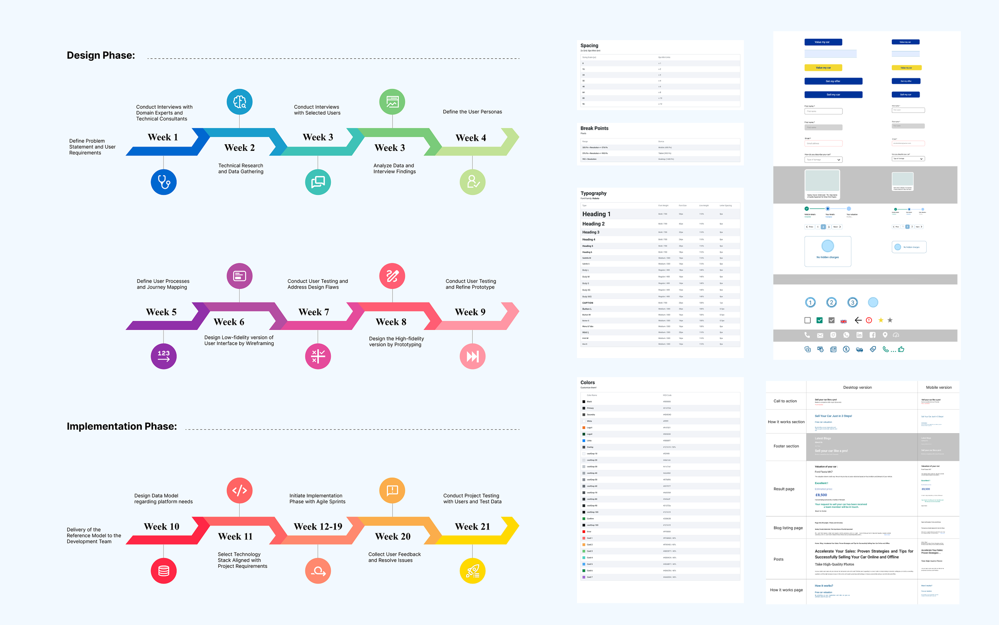
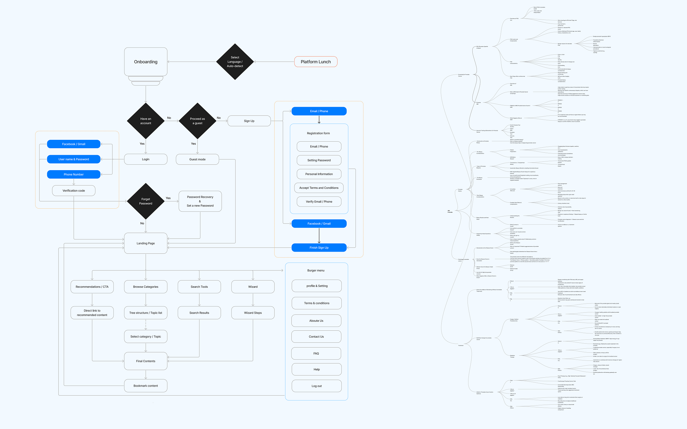
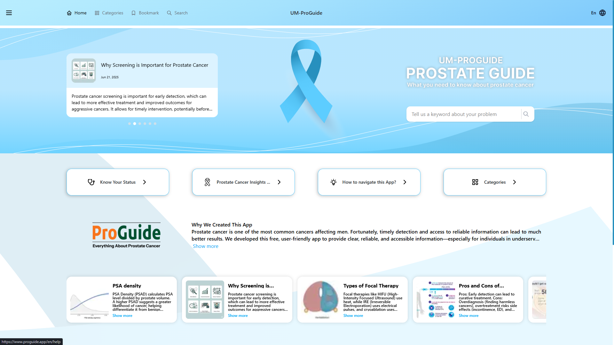

Helping patients find out which conversation they're actually having

ProGuide was built with a team of urologic oncology specialists at the University of Miami's Miller School of Medicine, for a clinic treating prostate cancer patients. The team faced a recurring problem: patients arrived without knowing which of three very different situations they were in, and every clarifying conversation ate into time the clinic needed for actual care.
The diagnosis wasn't the hard part, the questions after it were
Patients reaching the clinic fell into three distinct groups: people who'd noticed early symptoms outside of any medical setting and were wondering "do I have cancer," people referred by their own doctor for specialist screening, and people already diagnosed and in active treatment. Each group still had to go through the clinic for actual screening or treatment, the app was never meant to diagnose anyone. But once someone knew which of the three situations applied to them, a long list of questions and worries came with it, and there was no way to get answers without taking up a doctor's time.
That's where the gap was: doctors spent a large part of every day walking patients through the same general and situation-specific questions, on top of actual screening and treatment. Once a patient could select the situation that matched them, the app could hand them the right articles, images, and explanations for exactly that stage, cutting down on the repeat questions clinic visits kept generating, without ever standing in for the clinic itself.
A wizard that had to work in one touch, not three
The first version of the platform asked new visitors three short questions to route them into the right group and hand them a relevant list of articles. Usability testing showed this was one step too many: someone arriving anxious about their own health has very little patience for a multi-step intake before getting anything useful. I collapsed the triage down to a single tap, prioritizing a near-zero error rate over asking more clarifying questions.
Beyond the triage itself, the library was built as a proper self-serve knowledge base rather than a static brochure — with search, filtering, and content categorization so a patient could find what they needed without going through the wizard again on a return visit. Search history and saved articles persisted even without an account, so someone researching a diagnosis over several weeks could pick up where they left off (no private health data).

Timesheet / Ui Kit / Style Guide
User FLow / Mind MapWhere the trade‑offs actually happened
Post-testing, I cut the intake wizard from a 3-question flow to a single interaction, trading a slightly coarser first categorization for a much lower drop-off risk with an already-anxious user.
The AI assistant was fully designed to answer patient-specific questions from symptoms or test results, but launch was held back by the hospital's authorization and regulatory requirements around AI-generated medical guidance. It stayed a validated concept the clinical team could revisit rather than a rushed release.
Given the equity goals of the research team, English and Spanish were built into the content structure from the start, not added later.
A self-serve knowledge base, not a stack of brochures
The shipped product combined a one-tap triage with a searchable, filterable knowledge base of short-form articles and short videos, organized by patient group and topic. Multimedia content, photos, diagrams, short explainer videos, did the work that plain text couldn't for patients under stress, making dense medical topics easier to absorb without oversimplifying them. Search, filtering, and category browsing let patients revisit or explore beyond their initial triage result, and saved history worked even without creating an account, so returning users didn't lose their place. The AI assistant remains designed and ready, pending institutional approval.

Final UI screens / prototype linkProjected impact, per the clinical team's estimates
Details worth remembering
Color choices leaned toward calm, muted tones that matched the clinic's physical environment rather than a typical consumer health-app palette, since patients were often reading this content in a waiting room or right after a difficult conversation. Early structure came out of a mind map that categorized every possible question each of the three patient groups was likely to ask, which is what first exposed how much overlap there was between groups, a big part of why the triage logic ended up simpler than the first draft. Visual design carried that same restraint: minimal color palette, generous spacing, and clear typographic hierarchy so dense medical information stayed easy to scan. Usability testing was run with a small group matching the primary persona, men over 40, walking through both the 3-question and 1-tap versions of the triage, which is what surfaced the drop-off risk and led to cutting it down. At handoff, UI specs and flows were reviewed against the dev team's implementation to keep the shipped product aligned with the design.